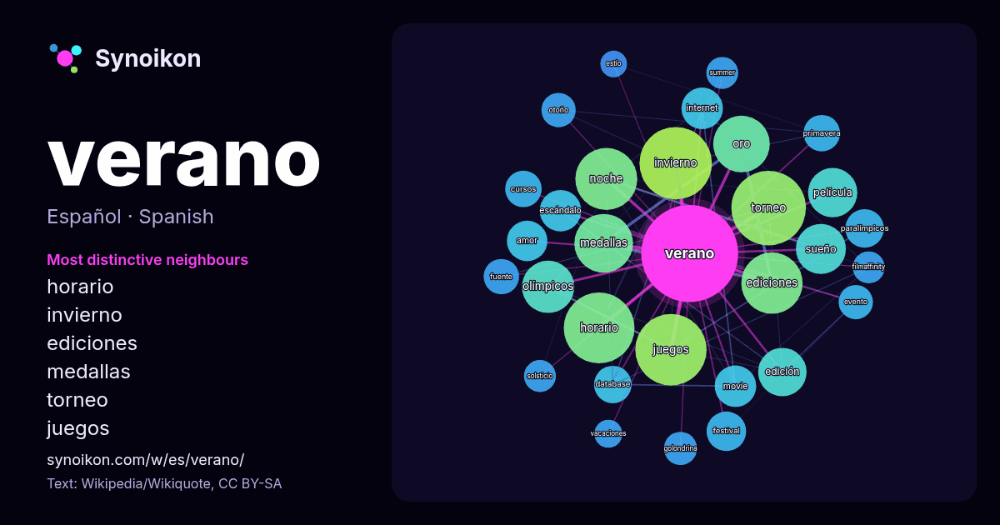

Español · lista de palabras del día
verano
“summer” · Las palabras encontradas a su alrededor en 1180 apariciones de Wikipedia, Wikiquote.

Vecinos más característicos
- horario 60×
- invierno 53×
- ediciones 41×
- medallas 36×
- torneo 36×
- juegos 34×
- noche 33×
- sueño 28×
- olímpicos 27×
- oro 24×
- movie 23×
- escándalo 22×
- paralímpicos 19×
- database 19×
- internet 19×
- edición 17×
- amor 16×
- primavera 15×
- golondrina 15×
- otoño 14×
× = cuántas veces más que en el texto general de Wikipedia.
Vecinos más frecuentes
- torneo 71
- invierno 67
- juegos 65
- horario 64
- noche 49
- ediciones 48
- medallas 44
- oro 41
- olímpicos 35
- sueño 32
- película 31
- edición 30
- universidad 26
- año 24
- escándalo 22
- internet 22
- movie 22
- amor 21
- festival 20
- paralímpicos 19
En contexto
- precede al otoño. El verano se caracteriza porque los días son más largos y las noches más cortas. Astronómicamente, el solsticio de verano (alrededor del 21 Wikipedia snippets · Verano
- La canción del verano es aquella que más impacto mediático causa en la sociedad durante los meses de verano. Suele tratarse de canciones con estribillos Wikipedia snippets · Canción del verano
- de verano, escuela de verano o universidad de verano se designa a cursos educativos diseñados para ser realizados durante las vacaciones de verano. Sus Wikipedia snippets · Curso de verano
- el horario de verano fue dejado de usar durante el sexenio de Andrés Manuel López Obrador el 30 de octubre del 2022. El horario de verano ha causado controversia Wikipedia snippets · Horario de verano
- Se conoce a 1816 como el año sin verano, año de la pobreza, el verano que nunca fue y el año que no tuvo verano, debido a las graves anomalías en el clima Wikipedia snippets · Año sin verano
- El Cementerio Comunal Monumental Campo Verano, popularmente conocido como "Cementerio del Verano", es un cementerio de Roma; situado en el barrio del Wikipedia snippets · Cementerio comunal monumental Campo Verano
- Universidad de verano es un tipo de curso de verano. Es una forma de educación superior que se da en el periodo de vacaciones de verano, y que al no destinar Wikipedia snippets · Universidad de verano
- noche de verano, I.I.2-3. El sueño de una noche de verano, I.I.208 -13. El sueño de una noche de verano, I.II.90-9. El sueño de una noche de verano, IV.I Wikipedia snippets · El sueño de una noche de verano
Más palabras
- agua
- arte
- bosque
- caballo
- camino
- campana
- canción
- ciencia
- ciudad
- clima
- comida
- corazón
- desierto
- dinero
- dios
- espejo
- estrella
- familia
- fuerza
- gato
- historia
- invierno
- isla
- jardín
- lengua
- lluvia
- madre
- mapa
- miel
- montaña
- muerte
- naturaleza
- oro
- otoño
- pan
- perro
- puente
- reloj
- sal
- salud
- silencio
- sombra
- tiempo
- tormenta
- trabajo
- tren
- té
- verdad
- vida
Precalculado el 2026-10-09 con los ajustes predeterminados (±5 palabras, corpus mediano). El mapa interactivo puede actualizarlo con datos en vivo.
Interfaz traducida automáticamente; se agradecen correcciones.